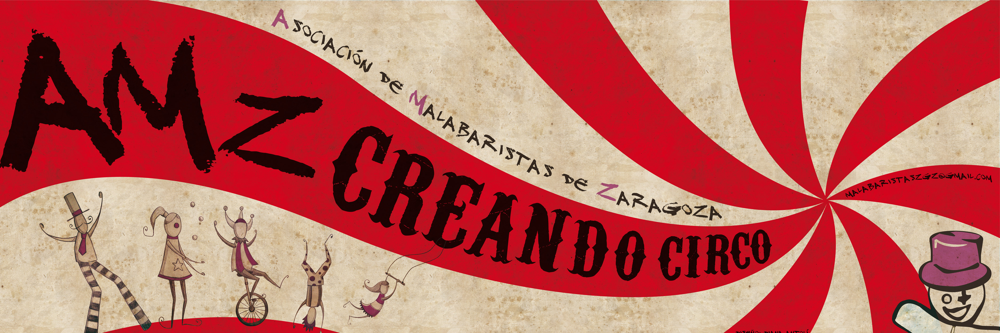

El Último Skalón comenzó hace 5 añazos, en verano de 2007, cuando Manu reune unos cuantos aficionados al ska del conservatorio de Zaragoza para componer algún tema y tocarlo juntos. A lo largo del siguiente curso el grupo se va consolidando, y los ensayos son cada vez más frecuentes, hasta que dan su primer concierto en las fiestas de Luceni a finales del 2008, más de un año después. La formación de la banda queda ajustada a 8 miembros, a saber Fernando (Batería), Ester (Bajo), Manu (Teclado y coros), Gonzalo (Guitarra eléctrica), Miguel (cantante), Latorre(saxo), Jaime(Trompeta) y Pedro(Trombón). A principios de 2010 se incorpora en el grupo el percusionista David.
El grupo presume de tener un estilo propio que mezcla ska, reggae, y otros ritmos fusionados con jazz , añadiéndole una buena dosis de creatividad artística y de crítica social en cada uno de sus conciertos. Desde sus comienzos, han tocado en más de 50 conciertos en diversos lugares como el Festival Carrascarrock 2009 y 2011, el Festival de Lagatavajunto 2010, 2011 y 2012 , Luna Lunera de Sos del Rey Católico o Festival Barrio 33 en Burdeos....
Entre los grupos con los que han tocado o compartido cartel se encuentran Roy Ellis, The Selecter, Tippa Irie, The Offenders, Gregtown, Jahsta Reggae Band, Swan Fyahbwoy, Alam, Chicharrica, Distorsión, Subversion X, La Ronda de Boltaña, China Chana, o Termofrigidus…
El 2 de Marzo de 2012 tuvo lugar la presentación de su segundo CD, 'Ciudadano del mundo' del cual se han vendido ya más de 500 copias y se han realizado más de 1200 descargas desde el portal Jamendo. En este disco se puede encontrar parte de la evolución del grupo tras estos años de andadura, en contraste los primeros 9 temas del primer CD 'Cae la noche' que hicieron a la banda conocerse musical y socialmente hablando. En concreto, cuenta con 12 temas más dos remezclas que prometen no defraudar respecto al directo. Actualmente se encuentran componiendo nuevos temas y ensayando el directo que va ligado al nuevo CD.
MySpace, Facebook, Jamendo Ciudadano del Mundo, Jamendo Cae la Noche